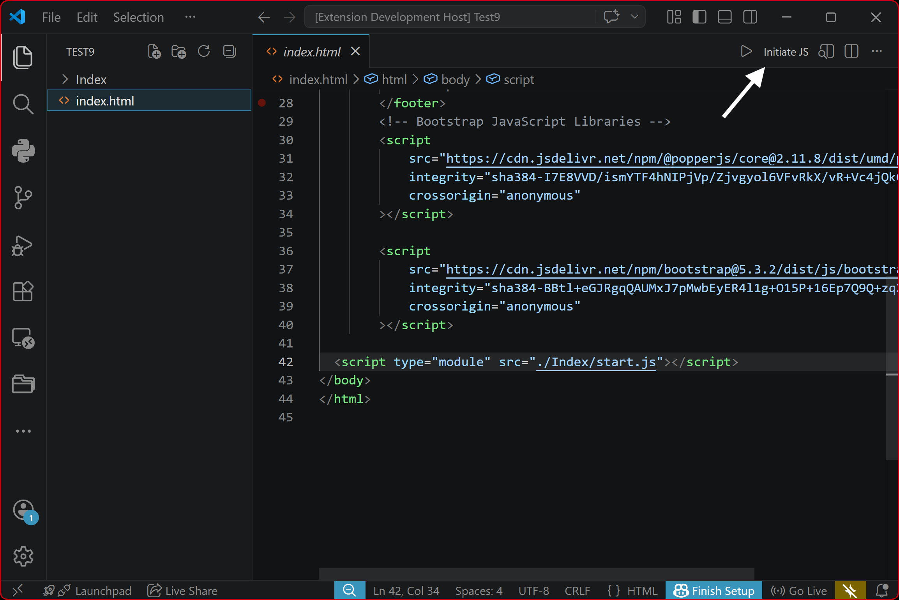

JavaScriptAI VS Code Extension
Overview
JavaScriptAI is a Visual Studio Code extension developed by KeshavSoft focused on AI-assisted server-side and User-side development using Node.js and Express.
GitHub Repository
JavaScriptAI helps automate JavaScript setup, event listener creation, and business logic injection directly from the Explorer context menu
Users can easily copy the GitHub repository link or open it directly. This helps them quickly access the project, view source code, and share the link with others without searching manually.
Commands
| Command | Title | Description |
|---|---|---|
| extension.initJs | Initiate Node API | Creates base Express server |
| extension.createEndpoint | CreateEndpoint | Creates GET / POST route in app.js |
| extension.addSubRoute | AddSubRoute | Links router module in routes.js |
| extension.addEndPoint | AddEndPoint | Adds endpoint logic to js file |
Editor Title Bar Actions
Quick access buttons in VS Code editor top-right corner.

Commends
- Intial JS
- AddListeners
- FetchCalls
Initiate JS
initial.js is usually used as a starting JavaScript file for a particular HTML page. Its main purpose is to load scripts, initialize UI components, and run page-specific logic when that HTML page opens.
- Create a js file

AddListeners
initial.js is usually used as a starting JavaScript file for a particular HTML page. Its main purpose is to load scripts, initialize UI components, and run page-specific logic when that HTML page opens.
- Create a js file

FetchCalls
initial.js is usually used as a starting JavaScript file for a particular HTML page. Its main purpose is to load scripts, initialize UI components, and run page-specific logic when that HTML page opens.
- Create a js file

New Feature – Editor Title Bar Actions (Top Right Buttons)
EndPointGen also provides quick access buttons in the VS Code editor title bar (top-right corner). These buttons allow you to create and manage endpoints without right-clicking in Explorer.
Available Title Bar Commands
Intial JS
it create intial code particular html
Support
- Click initiaJs button .it's create initial code
AddListeners
it create Addlistener code.
Support
- Click addlistener button , it's create addlistener code
FetchCalls
Creates a new file for fetch.
Supports
- automatic code generate
Benefits
- Faster development
- Standard project structure
- Less manual coding
- Modular architecture
- Clean Express setup
- Works directly inside VS Code